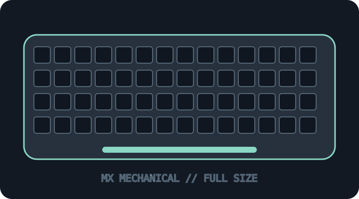

[ KEYBOARDS AND INTEGRATED POINTING DEVICES // IDENTIFIED SKU ]
Logitech MX Mechanical (920-010548)
Full-size low-profile wireless mechanical keyboard with smart illumination and Easy-Switch.

MODEL IDENTIFICATION: 920-010548 — full-size graphite US linear-switch configuration; verify region, switch option and label. This archive entry identifies a real manufacturer product/variant; physical labels and dated manuals supersede generalized family descriptions.
Model specifications
| Catalog subcategory | Keyboards and integrated pointing devices |
|---|---|
| Exact model / SKU | 920-010548 — full-size graphite US tactile-quiet configuration; verify region, switch option and label. |
| Layout and key arrangement | Full-size US ANSI layout with numeric keypad, navigation cluster and dedicated Easy-Switch keys. Other regions have different key legends/layouts. |
| Switch type / mechanism | Low-profile linear mechanical switches in the 920-010548 configuration; Tactile Quiet and Clicky builds are separate variants. Switches are not presented as user hot-swappable. |
| Interface and protocol | Bluetooth Low Energy or Logi Bolt USB receiver; USB-C is for charging, not the keyboard’s wired typing interface. Supports switching among up to three paired devices. |
| Key rollover / anti-ghosting | Logitech does not publish an NKRO or numeric rollover guarantee for this model. Do not infer gaming-grade rollover from the mechanical switch type; test the actual host/link if simultaneous input matters. |
| External dimensions | 433.85 × 131.55 × 26.1 mm (width × depth × height); approximately 828 g. Region, keycap and bundle differences should be checked against the product label. |
| OS and host compatibility | Logitech lists Windows, macOS, ChromeOS, Linux and iPadOS support, with feature differences by operating system. Logi Options+ customization is limited to supported Windows/macOS versions; receiver availability depends on bundle. |
| Revision / regional caveat | MX Mechanical full-size is not MX Mechanical Mini. SKU determines switch, key layout, color and market; USB-C charging must not be mistaken for a data cable mode. Firmware/app feature support can change. |
Preservation and service notes
Record Bolt receiver identity and paired hosts; retain battery/charging accessories and Options+ profile exports. Clean without liquid ingress and do not pry low-profile switch assemblies without model service documentation.
Record the as-found SKU/revision, host OS and version, connection method, firmware, keymap and test method. Do not infer rollover or compatibility from the connector alone; clearly separate unpublished manufacturer specifications from tested observations.
Manufacturer sources
- Logitech MX Mechanical product pageManufacturer full-size model overview and feature references.
- Logitech MX Mechanical setup and supportManufacturer setup and support reference for connection and host configuration.
Manufacturer pages can be revised or retired. Retain the applicable dated manual/specification with the physical equipment record.